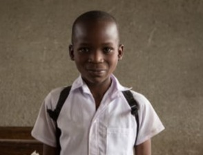

Join FIGY Travel's teaching program in Mwanza, Tanzania and make a meaningful difference in the education of children in need. Our teaching program provides an opportunity for volunteers to assist in local schools, where classes are often large and understaffed. As a volunteer, you'll gain valuable teaching experience by leading classes of helping local teachers with lessons in a variety of subjects. You may also have the chance to work in a school for students with disabilities, who need additional support to succeed.

Considerations
More than half of all children and teens do not meet minimum proficiency standards in reading and mathematics. Quality education provides an opportunity to learn and grow in a safe environment and is key to preventing poverty, securing long-term employment and improving quality of life.
As web designers and developers, our craft lies in the delicate balance of aesthetics and functionality.
The main objective of the studio with visuals is to cultivate a dynamic and inclusive creative space where artists and visionaries can harness the power of visual expression to communicate, provoke thought, and inspire.
By volunteering with children in Tanzania, you'll not only make a positive impact on their education, but you'll also benefit personally and professionally by:
Volunteering
In Mwanza's low-income communities, daycare and kindergarten facilities are bustling environments where many families rely on for childcare while they are at work. By volunteering, individuals can lighten the workload of local staff and enhance the care provided to preschoolers.
As a volunteer, you're allowed to bring educational materials like books and pencils, basic first aid supplies, and musical instruments to support activities and entertain the children. These items can usually be purchased locally in Tanzania, contributing to the local economy.